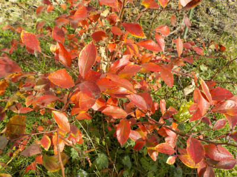
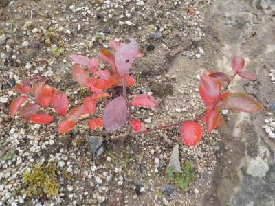
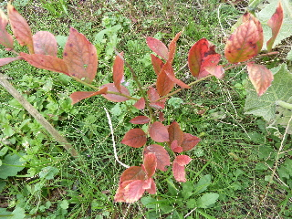

更新日 : 2023/12/09

朱色に紅葉しました。葉っぱが多く残っているので見栄えがいい。
来年はこの紅葉がさらに一回り大きくなるといいな。
更新日 : 2021/12/05

12月になって葉っぱが真っ赤になりました。
もうちょっと大きくなって葉っぱ茂ったら見栄えが良さそうです。大きくなったら紅葉しない可能性もありますけど、どうなるでしょうね。
更新日 : 2015/12/06

いい色に紅葉してます。
ブルーベリー農園とかに紅葉の季節に行くと、きっと綺麗なんだとうなー。
今年は暖かいので、12月になっても雑草が生き生きしてますね。緑の上の赤がいい感じでした。
自宅で鮮やかな紅葉を見れるのはとってもいいです。
【おいしいものを食べよう。】【たくさん寝よう。】
【ソロ活をしよう!】【季節感のあることをしよう。】【動画視聴はほどほどに。】【当サイトの全てのコンテンツは無断転載禁止です。】